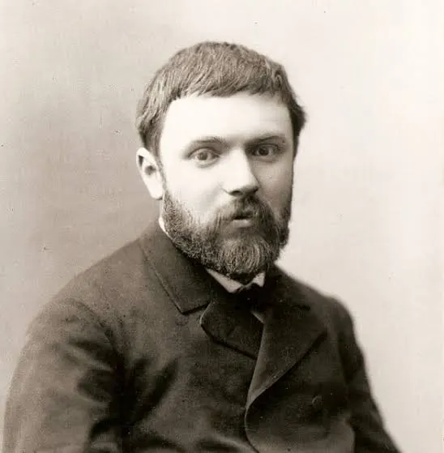
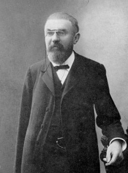

Jules Henri Poincaré (ur. 29 kwietnia 1854 w Cité Ducale niedaleko Nancy, Francja, zm. 17 lipca 1912 w Paryżu) Francuski uczony: matematyk, fizyk teoretyczny i matematyczny, astronom teoretyczny i filozof nauki, w tym matematyki, a z wykształcenia również inżynier górnictwa.Profesor fizyki matematycznej na Sorbonie, członek Francuskiej Akademii Nauki, Towarzystwa Królewskiego w Londynie (Royal Society).


Poincaré zajmował się analizą matematyczną, geometrią, topologią, teorią liczb, równaniami różniczkowymi i fizyką matematyczną. W każdej z tych dziedzin wprowadzał przełomowe idee.
Został profesorem Uniwersytetu Paryskiego w 1881 roku. Od 1886 profesor fizyki matematycznej na Sorbonie. Od 1887 członek Francuskiej Akademii Nauk i 22 innych akademii nauk (w tym Royal Society) oraz doktor honorowy 8 uniwersytetów. Z zawodu był inżynierem górnictwa.
Uważany jest za założyciela topologii algebraicznej.
Początki teorii chaosu pochodzą od badań francuskiego matematyka Henriego Poincaré, który pod koniec XIX wieku odkrył, że nawet proste równania opisujące ruch mogą prowadzić do bardzo skomplikowanych i nieprzewidywalnych zachowań. Jego prace nad problemem ruchu ciał w grawitacji pokazały, że niewielkie zmiany na początku mogą całkowicie zmienić przyszły ruch układu. Poincaré nie stworzył teorii chaosu w dzisiejszej formie, ale jako pierwszy odkrył zjawiska matematyczne, które później stały się jej fundamentem. Podczas badania ruchu planet zauważył, że niektóre układy deterministyczne mogą zachowywać się bardzo skomplikowanie i być praktycznie nieprzewidywalne.
Teoria Chaosu i Mechanika Niebieska